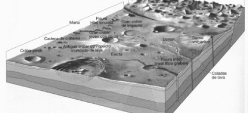

El Apolo 12
El punto de aterrizaje seleccionado en el Mare Cognitum prestó un entorno similar al experimentado por la tripulación del Apolo 11, y posibilitó a la relazación de comparaciones directas entre las sperficies de ambos mares en términos de materiales, edad y composición. Entre los objetivos de esta misión se incuían los de una exploración y muestreo geológico más sistemáticos del lugarr de aterrizaje (dentro de una distancia de 0,5 jm. del Módulo Lunar), así como el emplazamiento y activación de equipo científicos. Este incluía un sismómetro (para determinar el campo magnético en la superficie de la Luna y la conductividad eléctrica en su interior), e instrumentos para recoger información sobre la interacción de las partículas solares con la superficie y la casi inapreciable atmósfera de la Luna.
La geología de la Luna
La superficie de la Luna se ha formado principalmente por cráteres de impacto y actividad volcánica, modificados por una limitada serie de procesos de erosión operando en una entorno de tipo vacío. Casi en todas partes la superfiecie está formada por desechos de rocas pulverizadas y material de meteoritos fragmentados, la mayoría de los cuales son el resultado de la formación de cráteres por impacto durante un largo período de tiempo. La naturaleza y el grosor de esta debris superficial varían de un lugar a otro “Puede ser de hasta varios kilómetros de espesor en las antiguas elevaciones de las terrae, mientras que en las más jóvenes corrientes de lava de los maria tiene por lo general menos de 50m. La capas superiores de los materiales de desecho de la superficie que presentan una cosolidación de tipo suelto forman el regolita lunar.
El planeta Marte
Marte es el cuarto planeta en orden de distancia al Sol y el segundo más pequeño del sistema solar, después de Mercurio. Recibió su nombre en homenaje al dios de la guerra de la mitología romana (Ares en la mitología griega), y también es conocido como «el planeta rojo» debido a la apariencia rojiza que le confiere el óxido de hierro predominante en su superficie. Marte es el planeta interior más alejado del Sol. Es un planeta telúrico con una atmósfera delgada de dióxido de carbono, y tiene dos satélites pequeños y de forma irregular, Fobos y Deimos (hijos del dios griego), que podrían ser asteroides capturados similares al asteroide troyano (5261) Eureka. Sus características superficiales recuerdan tanto a los cráteres de la Luna como a los valles, desiertos y casquetes polares de la Tierra.